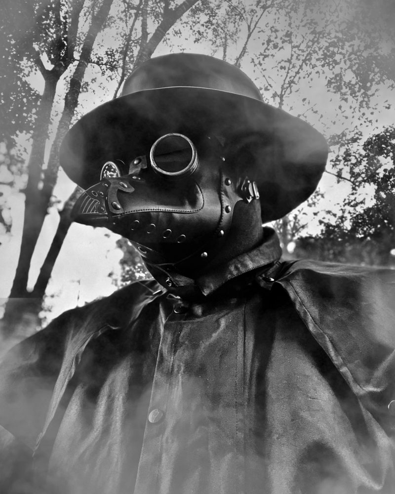
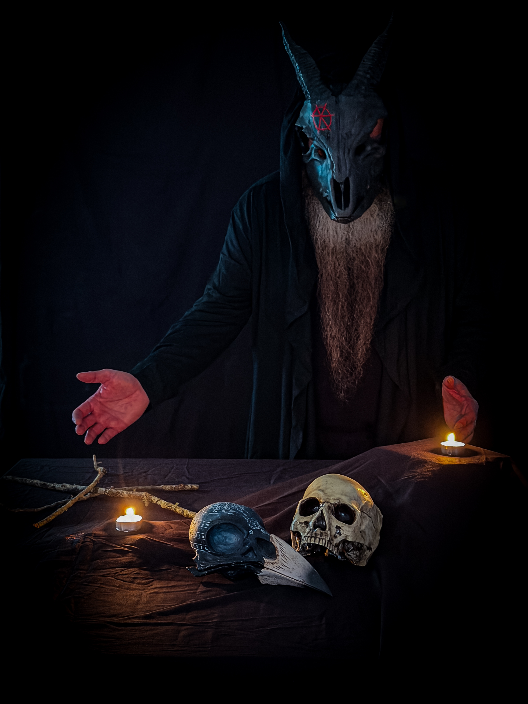

Grin Rot Prime
The face that started the whisper.
Appalachian Horror • Photography • Storytelling
Something is waiting in the woods.
Grin Rot began as a face in the dark: part Appalachian ghost story, part mask work, part warning from the tree line. The images here are not just portraits. They are fragments of a larger myth.
Some call him a cryptid. Some call him a man in a mask. The smart ones do not call him at all.
Characters, masks, and cinematic horror photography from the Grin Rot archive.
The face that started the whisper.

A silent physician for things already dead.
Every joke has a body count.
A stare from the basement of a bad idea.
These entries blur folklore, photography, and Appalachian nightmare fuel. The truth is optional. The atmosphere is not.

Grin Rot is the horror photography and dark storytelling project of James, creator from the Smoky Mountains of East Tennessee, and collected by an entity known only as The Archivist. The work mixes masks, atmosphere, Appalachian grit, and a love for the kind of images that feel like they crawled out of an old warning.
This site is the official home base for the Grin Rot universe: the photography, the characters, the lore, and whatever crawls out next.
For collaborations, features, prints, or strange transmissions, reach out below.